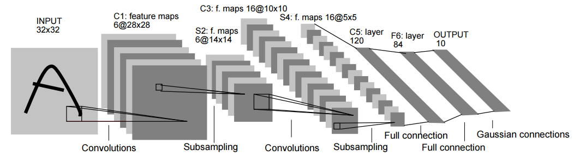

关于作者
关于作者
卷积神经网络实现minist分类
通过本节一个个神经网络的子模块介绍，您已经了解了各个组件的功能及作用。但如盲人摸象。如果仅仅看到部分很难去理解网络整体的情况。 为了帮助您对卷积神经网络有一个整体的了解，本节希望能通过minist字符识别帮助您更深的理解。
在前文我们通过自己手写的代码实现了MNIST。本次我们希望利用torch组件设计LeNet实现MNIST字符识别。
环境安装
此处假设你的电脑已经安装好了pytorch函数包
Lenet介绍
LeNet是一种经典的卷积神经网络模型，由Yann LeCun等人在1998年提出，主要用于手写数字识别任务。LeNet是第一个成功应用卷积神经网络的模型，为后来的卷积神经网络模型的发展奠定了基础。其网络结构如下

现在我们通过图像介绍一下网络结构，而能看懂网络结构图也是您之后学习中必备的技能。
1、Input 是一个32*32的图像
2、C1 从图中可以看出，C1是input通过卷积得到的通道数为6的特征图，每个特征图的尺寸为28*28。
但卷积的具体参数需要看论文的设置，具体为kernel size = 5 * 5，stride=1，padding=0。
3、S2 S2是C1通过步长为2的降采样得到的特征图，其通道数不变，尺寸变为原来的1/2，即14*14。
池化的方式图中也无法看出，通过论文得知是平均池化，此外后面还接了一个sigmoid层引入非线性。
4、C3
图中可以看出，C3是S2通过卷积得到的通道数为16的特征图，每个特征图的尺寸为10*10。
但卷积的具体参数需要看论文的设置，具体为kernel size = 5 * 5，stride=1，padding=0。
5、S4
S4是C3通过步长为2的降采样得到的特征图，其通道数不变，尺寸变为原来的1/2，即5*5。
池化的方式图中也无法看出，通过论文得知是平均池化，此外后面还接了一个sigmoid层引入非线性。
6、C5
C5 是一个通道数为120，宽高均为1的特征图。但具体怎么从二维变成一维的问题，在介绍池化层时我们提到可以采用全局池化。 但这里通过flatten函数将特征展平，变为[1655, 1]的一维向量，然后在采用全连接层转为[120, 1]的向量。
7、F6 F6 同样是通过全连接层得到的[80,1]的向量。
8、OUTPUT output是通过全连接层得到[10,1]的向量，对应分类为0-9共10个数字的概率。论文采用了高斯激活。
总体而言LeNet作为作为最早的CNN，已经初步具备了 “卷积-降尺寸-激活” 等提取特征流程。最后通过全连接输出不同类的概率。 之后的模型大体也是按照该流程，区别在于不同组件的顺序修改、组件替换、网络加深等。
LeNet网络搭建
趁热打铁，我们现将上述步骤通过torch实现，代码如下
# 定义 LeNet 网络
class LeNet(nn.Module):
def __init__(self):
super(LeNet, self).__init__()
self.conv1 = nn.Conv2d(1, 6, 5)
self.pool1 = nn.MaxPool2d(2, 2)
self.conv2 = nn.Conv2d(6, 16, 5)
self.pool2 = nn.MaxPool2d(2, 2)
self.fc1 = nn.Linear(16 * 4 * 4, 120)
self.fc2 = nn.Linear(120, 84)
self.fc3 = nn.Linear(84, 10)
def forward(self, x):
x = self.pool1(torch.relu(self.conv1(x)))
x = self.pool2(torch.relu(self.conv2(x)))
x = x.view(-1, 16 * 4 * 4)
x = torch.relu(self.fc1(x))
x = torch.relu(self.fc2(x))
x = self.fc3(x)
return x
在网络输出层，我们删除了高斯激活
导入库函数
首先需要导入所需的库函数，代码如下
import torch
import torch.nn as nn
import torch.optim as optim
import torchvision
import torchvision.transforms as transforms
定义数据
Pytorch里面包含了MNIST的数据集，所以我们这里直接使用即可。直接使用DataLoader来对数据进行读取。
# 加载数据集并进行预处理
transform = transforms.Compose(
[transforms.ToTensor(),
transforms.Normalize((0.5,), (0.5,))])
trainset = torchvision.datasets.MNIST(root='./data', train=True,
download=True, transform=transform)
trainloader = torch.utils.data.DataLoader(trainset, batch_size=64,
shuffle=True, num_workers=2)
testset = torchvision.datasets.MNIST(root='./data', train=False,
download=True, transform=transform)
testloader = torch.utils.data.DataLoader(testset, batch_size=64,
shuffle=False, num_workers=2)
损失函数和优化器
# 定义损失函数和优化器
net = LeNet()
criterion = nn.CrossEntropyLoss()
optimizer = optim.SGD(net.parameters(), lr=0.01, momentum=0.9)
定义训练主干
# 训练网络
for epoch in range(10): # 进行 10 次训练循环
running_loss = 0.0
for i, data in enumerate(trainloader, 0):
inputs, labels = data
optimizer.zero_grad()
# 前向传播、反向传播、优化
outputs = net(inputs)
loss = criterion(outputs, labels)
loss.backward()
optimizer.step()
running_loss += loss.item()
if i % 100 == 99:
print('[%d, %5d] loss: %.3f' %
(epoch + 1, i + 1, running_loss / 100))
running_loss = 0.0
print('Finished Training')
# 测试网络
correct = 0
total = 0
with torch.no_grad():
for data in testloader:
images, labels = data
outputs = net(images)
_, predicted = torch.max(outputs.data, 1)
total += labels.size(0)
correct += (predicted == labels).sum().item()
print('Accuracy of the network on the 10000 test images: %d %%' % (
100 * correct / total))
总结
通过上述代码你已经成功复现了MNIST文本识别，此时你可以尝试更改一下修改不同池化层，不同激活函数看看是否能得到不同的结果。 完整的代码可以在这里找到。其实这个完整代码也是由ChatGPT实现的。